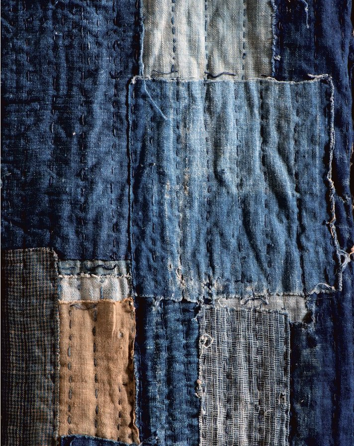

Theme T9 · Selected
Wear, fragility and the trace of time
T9 focuses on the materialization of wear and tear: the quality of its shape, and how it can represent notions of time and space, like the frequency of light and sound, morphing over time. Wear on leather is the same thing happening over a longer time span. T9 is about the object's change over time; T10 is about how one feels (emotions and senses) and how to activate that feeling.


Overall mood
The object after use. Treads dipped by feet, leather rubbed gray at the folds, cloth frayed to its warp, a patch stitched over a patch, gold along a crack, green on copper. Value sits in the shape the wear took and the time it records. Close, tactile, lit evenly; nothing fresh and flat.

Definition and test
Owner's definition (2026-11-15, lightly cleaned). T9 focuses on the materialization of wear and tear: the quality of its shape, and how it can represent notions of time and space, like the frequency of light and sound, morphing over time. Wear on leather is the same thing happening over a longer time span. T9 is about the object's change over time; T10 is about how one feels.
Test (Agent 2 reading, to confirm with the Owner). The wear is visible as a form, the form tells how it happened, and the object keeps the mark. Three checks: (1) a wear, fade, repair or patina process is visible in the image; (2) its shape is legible (direction, rate, where hand or foot met the object); (3) the object stays an object, not a graphic. Printed or laser-faked distress fails (2), because there is no process behind the shape.
Visual themes
01 The shape of wear. Key motifs: dipped treads, rubbed folds and seams, a ragged hole. Sub motifs: wear that follows use paths, gray where leather bends. Images (01), (04), (03).
02 Repair as a second layer. Key motifs: patch over patch, running stitch, gold along a crack. Sub motifs: mend visible, repair as the most valued part. Images (02), (06).
03 Fade and fray. Key motifs: color leaving cloth, warp showing where the weft has gone, loose fringe. Sub motifs: edges that dissolve, one hole. Images (03), (05).
04 Patina. Key motifs: brown copper turning turquoise at the edge. Sub motifs: a boundary where chemistry stopped. Image (07).
Hero material
Fact. Textile and leather carry the set: faded green silk with one hole (03, Met 463253), rust-red ikat strip with torn edges (05, Met 443604), indigo boro with sashiko stitching (02), a worn black leather jacket (04). Close views show weave, stitch and surface break-up.
Interpretation. The material that fits the test is one that records use: natural-fiber cloth and vegetable-tanned or aniline leather, which fade, fray and crease in shapes a reader can follow. Coated, sealed or print-distressed surfaces tell the Owner's story less well. Later candidates stay hypotheses; feasibility is for Engineering and Lab.
Visual elements
Photography. Even, raking or diffused light that shows relief; true color, no mood grade; close views with the whole object edge or one clear break.
Type and graphics. Plain captions in the Style Guide faces; number only on the board.
Layout habits. One large image of wear as form, then close-ups of the material.
Detail. Fringe, stitch, ragged hole, rubbed seam, a patina boundary.
Against (what T9 replaces)
Printed or laser-faked distress with no process behind it; flat, directionless damage; wear as costume. A new object can be a copy; the trace of time costs something to fake (theory note, Idea).
Not T10. Calm and softness do not qualify a repair image for T9, and sensory feeling is T10's. See Relation to T10.
Relation to T10
T9 owns repair (boro, sashiko, darning, kintsugi), wear, fade, fray, patina and the shape of damage over time: the object. T10 keeps edgeless and seamless surface, light without a source, sheer and felted cloth, and the felt quality of care: how one feels. Boro, darning and kintsugi that the T10 note left flagged T10? (draft 38 to 43) are claimed here. Where a repair is only calm to look at, it stays with T10 as a doubtful case. Not claimed by T9: the T10 test of "soft but with presence".
Visual story
Read the board as a change of scale. First the large shape of wear (01) and the patchwork made of repairs (02), then the single hole in a patterned cloth (03). The second row is material up close: leather rubbed gray at the folds (04), a strip frayed to the warp (05), gold on a crack (06), green on a copper rim (07). Same idea from the stair to the thread.
Core group and notable works
From the theory note (the log, not yet checked against images): Rei Kawakubo, Martin Margiela, Yohji Yamamoto, Ann Demeulemeester, Arte Povera, Burri, Gee's Bend quilters. No image of their work is on this board; brand and designer names are references only, not theme images.
What we can learn
Specify a finish by the process it records and the shape that process leaves, not by a "distressed" label. Ask which parts wear first and whether they fail well; make the repair a designed layer.
Working notes from the research vault
Raw notes as kept in the vault: sources, readings and open questions. Interpretations are marked; unverified items say so.
T9 developed (Agent 7 draft, 2026-11-16)
Everything in this section is Agent 7's proposal unless marked Owner or Fact. Outside sources are from general knowledge, unread, and must be checked before use.
Reading the Owner's definition: wear as a recording
The Owner compares wear to the frequency of light and sound, morphing over time, with leather as the same thing on a longer span. Taken literally this is a usable model. A wear mark is what repeated contact leaves: how deep it is records how many times and how hard, and its shape records the path of the movement. A stair tread dished by footsteps and the creases behind a knee are the same kind of record at different speeds. So the "quality of its shape" can be read, and designed for.
Five clocks
Five processes write on a material, each at its own speed. A T9 specification says which ones it invites.
| Clock | What it does | Examples |
|---|---|---|
| Light | Fades and shifts color | Sun-faded dye, yellowed paper |
| Touch | Polishes, thins, softens, frays | Shine on leather, worn elbows, a smoothed handle |
| Air and water | Oxidizes, stains, tarnishes | Patina on copper and brass, water marks |
| Stress | Creases, stretches, cracks | Fold lines, bagged knees, crazing in glaze |
| Repair | A person answers the other four | Darning, patching, boro, kintsugi |
The first four are the object's change. The fifth is where a person enters, and it is the point nearest to T3 (an intention made after the fact) and to T10's care.
Lenses
| Source | What it is said to argue | What it gives T9 |
|---|---|---|
| Riegl, "The Modern Cult of Monuments" (1903) | Separates age value (visible decay valued for itself) from historical value and from newness value (the demand that a thing look complete and fresh) | Names the opponent: newness value. Already a suggestion in this note |
| Tanizaki, In Praise of Shadows (1933) | Prefers the sheen of handling and age to the shine of the new | Already in the log, also a T10 source |
| Pye, The Nature and Art of Workmanship (1968) | Surface quality depends on the care taken in making | Shared with T3 |
The eight fields
- Claim (Owner). The materialization of wear and tear: the quality of its shape, and how it represents time and space. T9 is about the object's change over time.
- Against. Two opponents. Newness value: the object specified only for the day it is sold. Applied distress: wear printed or blasted on with no use behind it, the "washed" form of this theme.
- Test. Which clocks are running on it? Is the wear earned or applied? Does its shape record how the object was used? Is the object better or only worse for it?
- Sources. Above, unread. Figures and textile practices already listed in this note.
- Story. Drafted in Theme Framework, section 6.
- Translation. - Specify for year five as well as day one: say how each material is expected to look after use, and choose materials that gain from it. Some coatings and bonded surfaces only fail (peel, crack, turn sticky); those are outside T9. - Leave a clock visible: an unsealed edge, an undyed ground under a dyed surface, a metal left to tarnish. - Make repair possible and visible: accessible seams, replaceable parts, a mend that is allowed to show. - Where aging is applied in production, say so, and place it where use would have put it. - The far distance (automotive, five years out) is where this theme is strongest: an interior is judged at year ten, not at delivery. Unverified as an industry fact; Agent 1 to check.
- Variation. None yet. The Fall/Winter 2027-28 dark swatches from the Premiere Vision preview sit near the board's Boro indigo (Fact: Agent 2 measured the distance as 8.8); use them only if the story supports them.
- Signals (to be dated with Agent 1). Repair and resale programs at brands; materials sold on how they age; rules on durability and repair. Against: applied distress selling as well as earned wear with no difference in price or loyalty.
Owner, 2026-11-16
"Five clocks is very good." It reminded him of Christian Marclay's The Clock (2010): see Christian Marclay.
Open for the Owner
- Should repair stay in T9, or is it a bridge that belongs to T3?
Idea
Value comes from visible age and damage. A new object can be a copy; the trace of time cannot be faked, or at least costs something to fake. The counterpart to the authenticity question, and a link to T3 (rematerialization): a decaying material forces the question of what the object is.
Connections in the log (interpretation)
- Materials that decay or fade: Eva Hesse, Medardo Rosso, Anselm Kiefer, Andy Goldsworthy, Lee Bontecou.
- Memory and the worn object: Christian Boltanski, Joseph Cornell, Morandi.
- Fashion that shows damage: Rei Kawakubo, Martin Margiela, Yohji Yamamoto, Ann Demeulemeester.
- Poverty of material: Arte Povera, Mario Merz.
- Asia link (T8): Mishima.
- Related themes: T1, T3, T6, T8.
Suggested additions (unverified, for research)
- Figures: Alberto Burri, Gee's Bend quilters, Rachel Whiteread, Doris Salcedo, Ann Hamilton.
- Texts: Tanizaki, In Praise of Shadows; Riegl on age value.
- Textile: boro and sashiko, kintsugi, visible mending, Margiela garment-aging methods.
- Events: dated boro shows or auctions, museum restore-or-leave decisions (Agent 1 to find).
Assets ready now (Library/Image Collection)
Met ikat strips with torn, frayed edges (2026-11-06 Met 443604, Met 448302, Met 448072), faded green silk with one hole (Met 463253), fallen maple leaves on wet asphalt (2026-11-08 Field 142234). Agent 2 to tag these [T9].